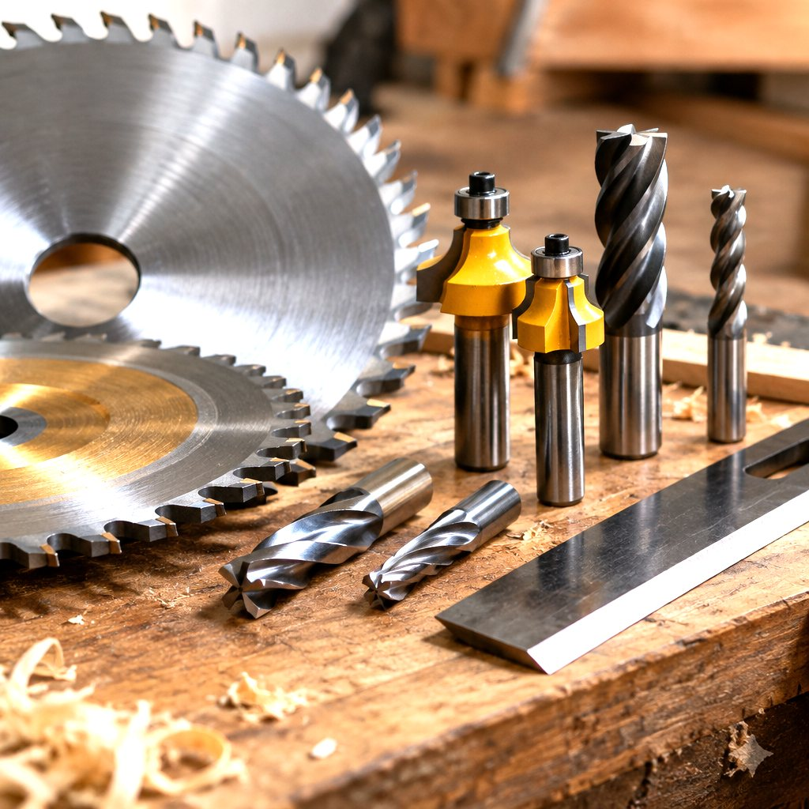

Пилы
Дисковые пилы и диски
Диск с напайками точат по зубу: важны передний угол, форма и одинаковая высота. Иначе пила будет бить и оставлять сколы.
Работы
Что делаем с дисками
Диски с напайкамиТвердосплавные зубья, разный профильзатачиваем
Диски по деревуПродольный и поперечный пилзатачиваем
Диски по ламинатуПрофиль под сколзатачиваем
Диски по алюминиюСпециальный профиль зубауточняйте
Пилы сабельныеПо профилю зубазатачиваем
Ленточные пилыПолотно по ширине и шагууточняйте
Фото
Диски на верстаке

Если один зуб выше других, он берёт на себя всю нагрузку и выкрашивается первым. Поэтому затачиваем весь венец, а не отдельные зубья.
Признаки
Когда пора точить
- пила оставляет следы и сколы
- появился запах горелого дерева
- пилу уводит в сторону
- на зубьях видно выкрашивание
- станок требует больше подачи
- диск «звенит» иначе, чем раньше
Диск пилит плохо?
Позвоните: назовите диаметр и материал — скажем, что можно сделать с зубом.